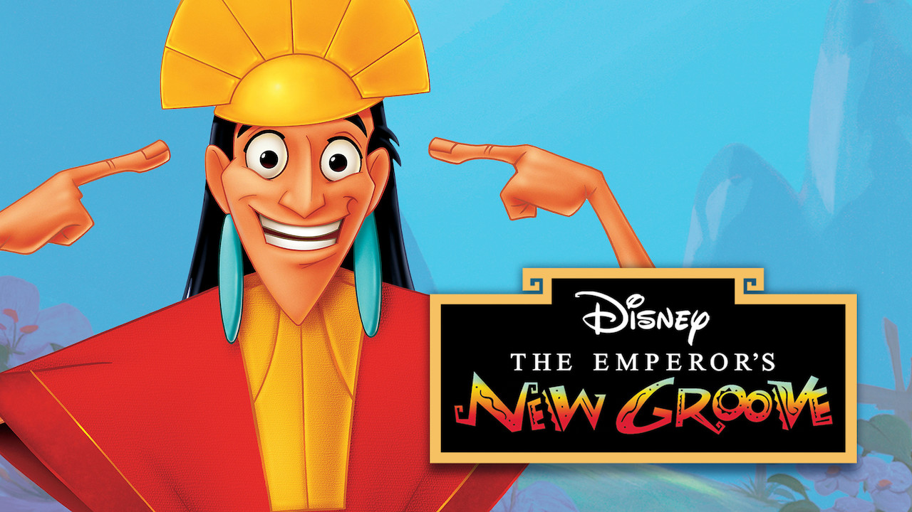

The Emperor’s New Groove
In the movie ‘The Emperor’s new Groove’, good and evil isn’t always clear, at the beginning Kronk
is Yzma’s sidekick, he originally helps to kill the Emperor Kuzco, but quickly regrets it after he finds
out that instead of killing the emperor, he was turned into a llama. Once Yzma insults Kronk, he helps Kuzco
regain his body and overthrow Yzma
